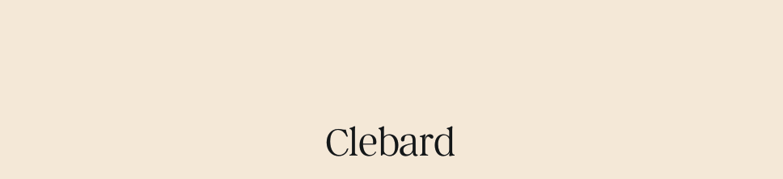
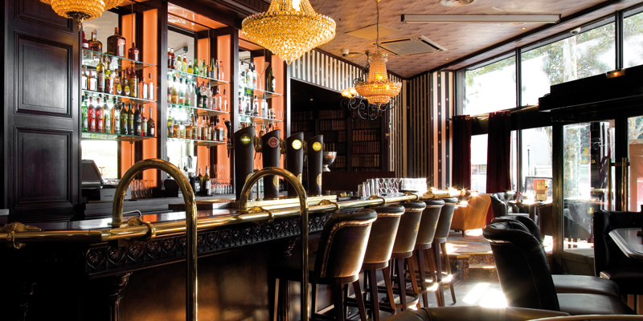

Bienvenue au Clébard!
Situé au cœur d'un charmant quartier Montreuillois, Le Clébard est bien plus qu'un simple bar — c'est un véritable lieu de rencontre pour les amoureux de la convivialité, du bon goût et des moments inoubliables. Imaginé comme un espace chaleureux et authentique, Le Clébard est sur le point d’ouvrir ses portes pour vous offrir une expérience unique où se mêlent l’esprit de quartier et la modernité d’un bar de caractère.
Un Lieu de Vie et d’Échanges
Plus qu’un bar, Le Clébard se veut être un véritable lieu de vie où les habitants du quartier et les visiteurs de passage pourront se rencontrer et échanger. Avec des événements réguliers tels que des concerts acoustiques, des soirées à thème, ou encore des expositions d'artistes locaux, Le Clébard est destiné à devenir un incontournable de la scène locale parisienne.

Rendez-vous au Clébard
Le Clébard ouvrira bientôt ses portes, et nous sommes impatients de vous accueillir dans notre petit coin de paradis au cœur de Paris. Que vous veniez pour un apéritif entre amis, un rendez-vous romantique, ou simplement pour savourer une boisson après une longue journée, Le Clébard sera votre nouveau repère où chaque visite se transforme en une belle expérience.
À très bientôt pour trinquer ensemble au Clébard !